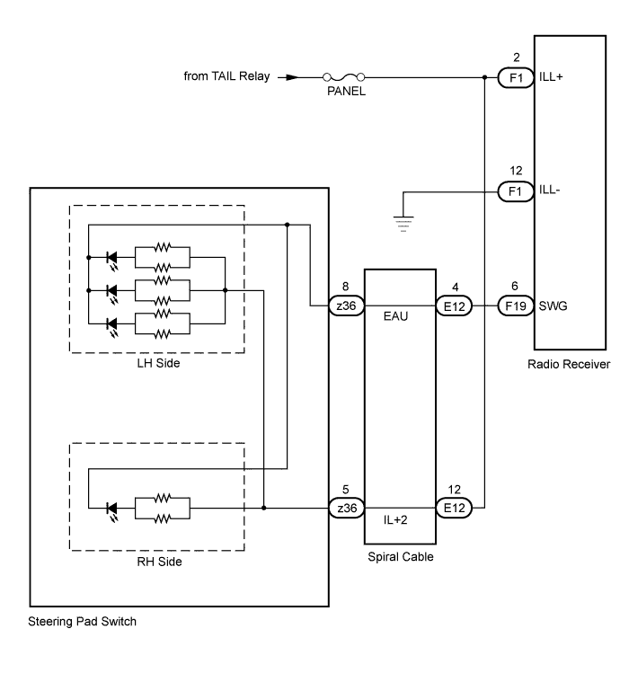
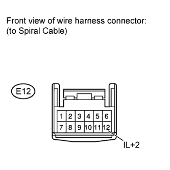
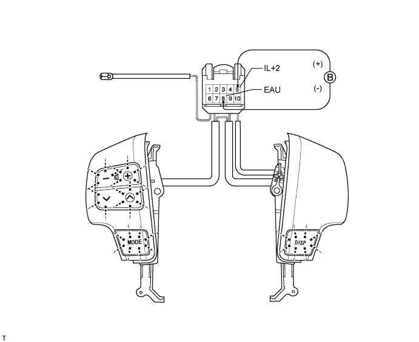
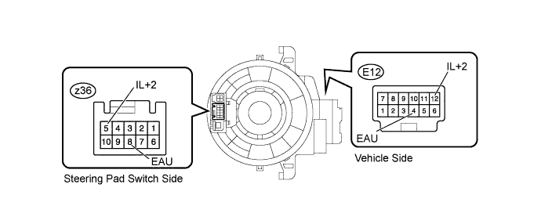
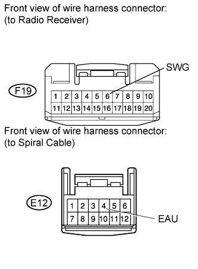
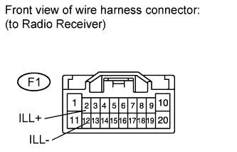

AUDIO AND VISUAL SYSTEM (w/o Multi-display) > Illumination Circuit |

| 1.CHECK ILLUMINATION |
Check if the illumination for the steering pad switch, glove box light, cigarette lighter, or others (seat heater switch, front seat memory switch, etc.) comes on when the light control switch is turned to the head or tail position.
| Result | Proceed to |
| Illumination comes on for all components except steering pad switch. | A |
| Illumination comes on for all components except radio receiver. | B |
| No illumination comes on for radio receiver, glove box light, front seat memory switch, cigarette lighter, etc. | C |
|
| ||||
|
| ||||
| A | |
| 2.CHECK HARNESS AND CONNECTOR (SPIRAL CABLE - BATTERY AND BODY GROUND) |
 |
Disconnect the E12 cable connector.
Measure the voltage according to the value(s) in the table below.
| Tester Connection | Switch Condition | Specified Condition |
| E12-12 (IL+2) - Body ground | Light control switch tail or head | 11 to 14 V |
|
| ||||
| OK | |
| 3.CHECK STEERING PAD SWITCH ASSEMBLY |

Disconnect the z36 switch connector.
Apply battery voltage to the terminals of the connector, and check the LED illumination condition.
| Measurement Condition | Specified Condition |
| Battery positive (+) → Terminal 5 (IL+2) Battery negative (-) → Terminal 8 (EAU) | Light illuminates |
|
| ||||
| OK | |
| 4.INSPECT SPIRAL CABLE SUB-ASSEMBLY |

Disconnect the E12 and z36 cable connectors.
Measure the resistance according to the value(s) in the table below.
| Tester Connection | Condition | Specified Condition |
| E12-12 (IL+2) - z36-5 (IL+2) | Spiral cable is turned 2.5 rotations counterclockwise | Below 3 Ω |
| Spiral cable is centered | ||
| Spiral cable is turned 2.5 rotations clockwise | ||
| E12-4 (EAU) - z36-8 (EAU) | Spiral cable is turned 2.5 rotations counterclockwise | Below 3 Ω |
| Spiral cable is centered | ||
| Spiral cable is turned 2.5 rotations clockwise |
|
| ||||
| OK | |
| 5.CHECK HARNESS AND CONNECTOR (SPIRAL CABLE - RADIO RECEIVER) |
 |
Disconnect the F19 receiver connector.
Disconnect the E12 cable connector.
Measure the resistance according to the value(s) in the table below.
| Tester Connection | Condition | Specified Condition |
| F19-6 (SWG) - E12-4 (EAU) | Always | Below 1 Ω |
| F19-6 (SWG) - Body ground | Always | 10 kΩ or higher |
|
| ||||
| OK | ||
| ||
| 6.CHECK HARNESS AND CONNECTOR (RADIO RECEIVER - COMBINATION METER AND BATTERY) |
 |
Disconnect the F1 receiver connector.
Measure the resistance according to the value(s) in the table below.
| Tester Connection | Condition | Specified Condition |
| F1-12 (ILL-) - Body ground | Always | Below 1 Ω |
Measure the voltage according to the value(s) in the table below.
| Tester Connection | Switch Condition | Specified Condition |
| F1-2 (ILL+) - Body ground | Light control switch tail or head | 11 to 14 V |
|
| ||||
| OK | ||
| ||